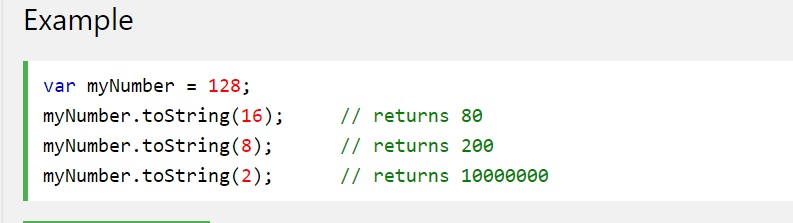

JavaScript has only one type of number. Numbers can be written with, or without, decimals
JavaScript Numbers are Always 64-bit Floating Point.
JS doesn't define different types of numbers (ie: integers, short, long, floating-point etc)
This differes from other programming languages.
Integerts (numbers w/o a period or exponent notation) are considered accurate up to 15 digits.
Max number of decimals is 17, but floating point arithmetic is not always 100% accurate:
Example
Use the long way to solve the problem above.
f = (0.2 * 10 + 0.1 * 10) / 10;
By default, JS displays numbers as base 10 decimals
Possible to use toString() method to output numbers as base 16 (hex), base 8 (octal), or base 2 (binary).
JS will return Infinity or (-Infinity) if you calculate a number outside the largest possible number.